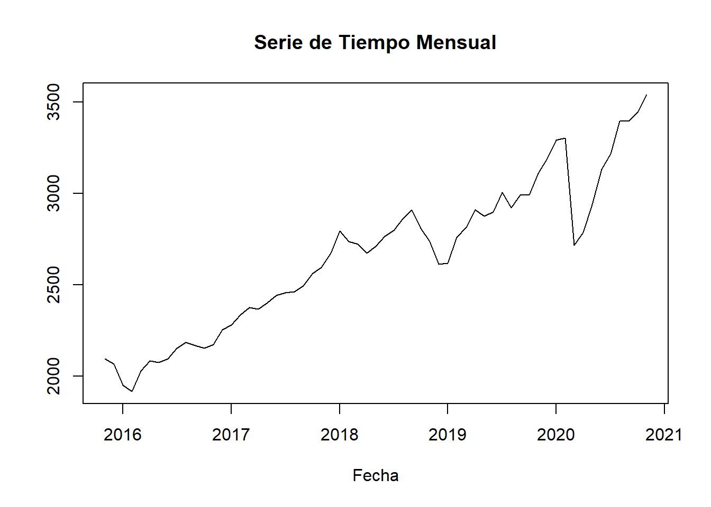

Código
# Carga de paquetes necesarios
knitr::opts_chunk$set(echo = TRUE)
knitr::opts_chunk$set(message = FALSE)
knitr::opts_chunk$set(warning = FALSE)
library(tidyverse)
library(lubridate)
library(forecast)
library(xts)Trabajo Práctico n°4
# Carga de paquetes necesarios
knitr::opts_chunk$set(echo = TRUE)
knitr::opts_chunk$set(message = FALSE)
knitr::opts_chunk$set(warning = FALSE)
library(tidyverse)
library(lubridate)
library(forecast)
library(xts)Se extrajo información de Yahoo Finance sobre índice S&P 500 desde el 2015 al 2020, junto con la información del precio de cierre del conjunto de datos disponible, aunque también está disponible otra información como el precio de apertura, el precio de cierre ajustado, etc. Mas información consultar aquí
data <- read_csv('yahoo_stock.csv')
glimpse(data)Rows: 1,825
Columns: 7
$ Date <date> 2015-11-23, 2015-11-24, 2015-11-25, 2015-11-26, 2015-11-2~
$ High <dbl> 2095.61, 2094.12, 2093.00, 2093.00, 2093.29, 2093.29, 2093~
$ Low <dbl> 2081.39, 2070.29, 2086.30, 2086.30, 2084.13, 2084.13, 2084~
$ Open <dbl> 2089.41, 2084.42, 2089.30, 2089.30, 2088.82, 2088.82, 2088~
$ Close <dbl> 2086.59, 2089.14, 2088.87, 2088.87, 2090.11, 2090.11, 2090~
$ Volume <dbl> 3587980000, 3884930000, 2852940000, 2852940000, 1466840000~
$ `Adj Close` <dbl> 2086.59, 2089.14, 2088.87, 2088.87, 2090.11, 2090.11, 2090~serie_tiempo<- ts(data$High,
start = c(2015, 11, 23),
end= c(2019, 11, 01),
frequency= 365)
# Graficar la serie de tiempo
plot(serie_tiempo, main = "Serie de Tiempo Diaria", xlab = "Fecha", ylab = "")
# Resampleo para obtener información semanal
weekly_data <- period.apply(data,
endpoints(data, "weeks"),
mean)
head(weekly_data) High Low Open Close Volume Adj.Close
2015-11-29 2093.657 2082.381 2088.413 2089.114 2511330000 2089.114
2015-12-06 2095.424 2062.360 2072.860 2083.891 4127001429 2083.891
2015-12-13 2064.866 2032.529 2059.246 2039.660 4174424286 2039.660
2015-12-20 2050.330 2016.984 2040.230 2028.137 5425432857 2028.137
2015-12-27 2057.116 2043.363 2047.100 2052.624 2344667143 2052.624
2016-01-03 2066.690 2048.741 2062.573 2053.426 2574751429 2053.426# Resampleo para obtener información mensual
monthly_data <- period.apply(data,
endpoints(data, "months"),
mean)
head(monthly_data, 10) High Low Open Close Volume Adj.Close
2015-11-30 2093.676 2082.135 2088.730 2088.026 2731792500 2088.026
2015-12-31 2066.437 2039.244 2054.882 2051.353 3815578065 2051.353
2016-01-31 1948.653 1908.105 1933.377 1927.887 4739021935 1927.887
2016-02-29 1914.799 1885.758 1902.270 1902.568 4620100690 1902.568
2016-03-31 2028.116 2009.713 2016.151 2023.688 4391160000 2023.688
2016-04-30 2081.742 2063.640 2073.396 2074.564 3834427000 2074.564
2016-05-31 2073.427 2055.970 2064.267 2066.167 3696565484 2066.167
2016-06-30 2095.187 2070.895 2087.588 2081.776 4207948000 2081.776
2016-07-31 2151.639 2137.544 2142.766 2147.336 3467463226 2147.336
2016-08-31 2183.407 2171.030 2177.704 2178.121 3283614516 2178.121ts_monthly <- ts(monthly_data$High, start = c(2015,11), frequency = 12)
# Graficar la serie de tiempo
plot(ts_monthly, main = "Serie de Tiempo Mensual", xlab = "Fecha", ylab = "")
descomposicion <- decompose(serie_tiempo)
# Componente de tendencia
plot(descomposicion$trend, main = "Componente de Tendencia", ylab = "Tendencia")
plot(descomposicion$seasonal, main = "Componente estacional", ylab = "estacionalidad")
plot(descomposicion$random, main = "Componente de Residuales", ylab = "Residuales")
Autocorrelation Function (ACF) = autocorrelación entre la serie de tiempo y una retrasada de si misma —> Moving Average Model (MA)
Proceso de promedio móvil (MA), un proceso en el que el valor actual de la serie se define como una combinación lineal de errores pasados. Suponemos que los errores se distribuyen independientemente con la distribución normal.
ACF define el orden MA(q)
Partial Autocorrelation Function = La autocorrelación parcial mide la correlación entre dos variables separadas por k periodos cuando no seconsidera la dependencia creada por los retardos intermedios existentes entre ambas.
Proceso autorregresivo (AR) , se dice que una serie de tiempo es AR cuando el valor presente de la serie de tiempo se puede obtener utilizando valores anteriores de la misma serie de tiempo, es decir, el valor presente es el promedio ponderado de sus valores pasados.
PACF define AR (p)
acf(serie_tiempo, lag.max = 200, plot=T)pacf(serie_tiempo, main = "Gráfico de ACF", lag.max = 30)\[\begin{align*} \LARGE \mathbf{ARIMA} (p, d, q) {x} (P, D, Q)S \end{align*}\]
Elementos de la tendencia:
Elementos de la estacionalidad:
# Ajustar un modelo ARIMA automáticamente
modelo_autoarima <- auto.arima(serie_tiempo,
seasonal= TRUE)
# Resumen del modelo ARIMA seleccionado automáticamente
summary(modelo_autoarima)Series: serie_tiempo
ARIMA(0,1,1) with drift
Coefficients:
ma1 drift
0.0481 0.6968
s.e. 0.0263 0.3811
sigma^2 = 193.3: log likelihood = -5913.47
AIC=11832.95 AICc=11832.96 BIC=11848.81
Training set error measures:
ME RMSE MAE MPE MAPE MASE
Training set 0.001512134 13.88835 8.256313 -0.002207855 0.3257584 0.02986784
ACF1
Training set -0.0002433824# Número de pasos hacia el futuro para hacer la predicción
n_pasos <- 70 # Reemplaza con el número de pasos que desees predecir
# Ajustar un modelo ARIMA con los parámetros especificados
modelo_arima <- arima(serie_tiempo,
order = c(0, 1, 1),
seasonal = c(0,1,0))
# Hacer la predicción
prediccion <- forecast(modelo_arima, h = n_pasos, level = 0.95)
# Imprimir la predicción con la banda de confianza
# Crear un gráfico de las predicciones con banda de confianza
plot(prediccion, main = "Predicción con Banda de Confianza")ses_<- forecast::ses(serie_tiempo,
h = 20,
seasonal= "additive")
autoplot(ses_)holt_ <- forecast::holt(serie_tiempo,
h = 50,
seasonal= "multiplicative")
autoplot(holt_)